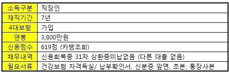
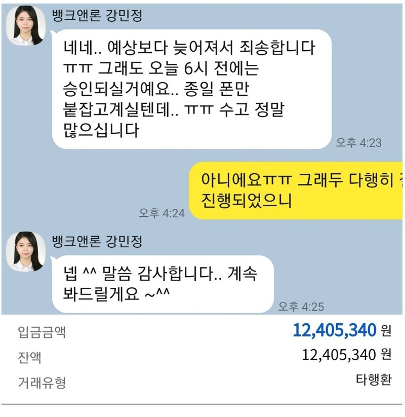

[신용회복자대출] 강민정담당자님 덕분에 좋은금리로 대출 받았어요.

신용회복중이고, 신용회복은 2년 넘으면 공공기록 삭제되면서 점수가 오른다고 하는데 저는 장기연체기록 때문인지 도통 점수가 오르지 않더라구요.
이번에 집 이사를 하게 되면서 목돈이 필요해서 예전에도 종종 도움 받았던 곳이라 카카오톡으로 먼저 문의를 드렸습니다.
강민정 담당자님이 연결되었고, 제 상황에 대해 설명을 드리니 우선 금리 조건이 좋은 금융사부터 한도조회 하고, 계속해서 안내드리겠다고 걱정말라고 하시면서 안심시켜 주셨어요.
심사 상담시 어떻게 말해야 유리한지 친절히 설명해 주셔서 준비를 하고 있었는데, 처음 진행한 4곳은 모두 한도가 나오지 않았어요.
추가로 다른 금융사들을 해보자 했는데, 제가 오전에 휴대폰어플에서 대출한도 조회하기를 했을 때 언급하신 금융사는 모두 불가로 나왔었다고 말씀을 드리면서 흘러가는 말로 2주 전쯤 휴대폰 어플에서 대출한도 조회하기 했을때, 어떤 금융사에서 1300만원정도 가능하다고 나온적이 있다고 말씀을 드렸더니, 혹시 신용회복 채무에 ******* 곳이 있는지 물어보시더라구요.
확인 후 없으면 금리도 8%대에 1200만원까지 신청할 수 있는 상품이 있다고 하셨어요.
휴가를 내고 집에 있던 상태라 채무내역서를 바로 확인하니, 말씀해 주신 곳은 채무가 없었어요.
두군데 금융사가 한도도 좋고 진행도 빠르다고 하여 바로 진행을 하게 되었습니다.
두군데 모두 한도 1,300만원 금리는 8.37%/ 8.47% 나와서 바로 서류 준비해서 발송 했습니다.
건강보험은 인터넷에서 금융사 팩스로 발송/ 초본은 정부24 사이트에서 금융사 담당자 아이디로 제3자 발급/ 신분증앞면, 통장개설확인서는 사진으로 찍어서 전송했어요. (시간이 거의 5시가 넘었던지라 다음날 승인이 될 것 같다고 미리 알려주셨어요.)
다음날 오전에 출근해서 언제 연락이 올까 싶어서 휴대폰 보면서 기다리는 데 11시까지 아무 연락이 없어서 안되나? 불안해하고 있었어요. 강민정 담당자님이 먼저 카톡을 주셔서 진행상태를 물어봐 주셔서... 연락이 없다 말씀드렸더니, 금융사에 알아보시고 초본 미도착이라고 알려주셨어요. 회사에서 휴대폰에 정부24앱을 설치해서 다시 초본 발송을 했습니다. (출력 필요 없어요)
서류 발송 후, 강민정 담당자님이 계속 체크해 주셨고, 3시 정도에 재직 확인까지 마쳤다고 결과 알려주셨어요.
금융사 담당자와 통화 후 전자약정서를 문자로 받아서 공동인증과 신분증 사진 첨부해서 넣고 나니 바로 진행이 되더라구요.
(해당 금융사와는 한도조회, 약정조건 및 설명, 약정 후 최종 확인: 총3번 통화)
회사에 있다보니, 전화 받는 거 때문에 종일 폰을 신경쓰고 있었는데, 강민정 담당자님께서 그런 부분도 세심히 신경써 주시고...
큰 기대 안하고 상담했는데, 좋은 조건으로 대출 받게 되어 감사합니다. ^^ 앞으로도 더욱 건승하세요!

https://cafe.naver.com/cityman88/286930